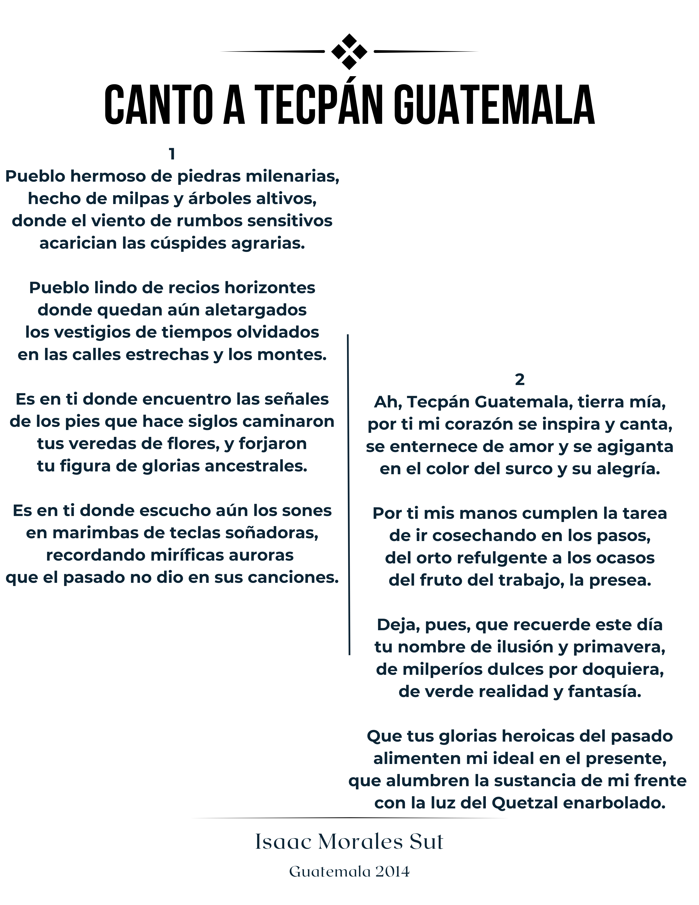

Editorial
Nómina de Junta Directiva
Directorio
Director de la revista
Editor en jefe
Coeditores
Consejo Editorial
Comité editorial
1
La educación virtual, antes, durante y postpandemia
1.1
Resumen
1.2
Abstract
1.3
Palabras clave:
1.4
Introducción
1.5
Artículo
1.6
Conclusiones
1.7
Discusión de resultados
1.8
Referencias
2
Desarrollo de un emprendimiento aplicado en la ingeniería civil en Guatemala
2.1
Resumen
2.2
Palabras clave:
2.3
Introducción
2.4
Artículo
2.5
Conclusiones
2.6
Referencias
3
De la Educación Tradicional hacia la Educación Virtual
3.1
Resumen
3.2
Abstract
3.3
Palabras Clave:
3.4
Introducción
3.5
Artículo
3.6
Conlusiones
3.7
Referencia
4
Normalización para la producción, distribución, transporte, manejo, y uso de los gases medicinales en Guatemala.
4.1
Resumen
4.2
Abstract
4.3
Palabras clave:
4.4
Introducción
4.5
Artículo
4.6
Conclusiones
4.7
Referencias
5
Inteligencia de decisiones
5.1
Resumen
5.2
Abstract
5.3
Palabras clave:
5.4
Introducción
5.5
Artículo
5.6
Conclusiones
5.7
Referencias
6
Inteligencia artificial
6.1
Resumen
6.2
Abstract
6.3
Palabras clave:
6.4
Introducción
6.5
Artículo
6.6
Conclusiones
6.7
Referencias
7
Sistema Inmunitario Digital (DIS)
7.1
Resumen
7.2
Abstract
7.3
Palabras clave:
7.4
Introducción
7.5
Conclusiones
7.6
Referencias
8
Importancia del tratamiento del agua, en la industria
8.1
Resumen
8.2
Palabras claves:
8.3
Introducción
8.4
Artículo
8.5
Recomendaciones
8.6
Conclusiones
8.7
Referencias
9
Opciones de la Práctica Final que prefieren los estudiantes de la Facultad de Ingeniería
9.1
Resumen
9.2
Abstract
9.3
Introducción
9.4
Artículo
9.5
Conclusiones
9.6
Referencias
10
Desarrollo de un sistema de inicio de sesión único (SSO) para el Instituto Nacional de Ciencias Forenses de Guatemala
10.1
Resumen
10.2
Abstract
10.3
Palabras clave:
10.4
Introducción
10.5
Artículo
10.6
Conclusiones
10.7
Referencias
11
Diálogo
12
Canto a Tecpán Guatemala
Facultad de Ingeniería - USAC
Revista digital de la unidad de prácticas de ingeniería y EPS
12
Canto a Tecpán Guatemala
